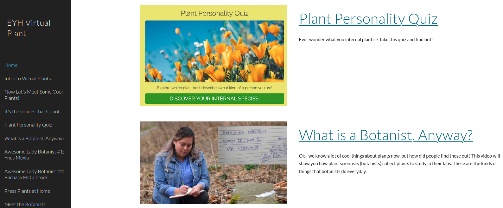

As a graduate student, I have focused my efforts on mentoring URM undergraduate students through research experiences, workshops, and graduate school recruitment.
I really enjoy engaging children in building hypothesis, expanding their curiosity, and integrating art and science.
I worked with fellow graduate students at Cornell to create a virtual plant workshop for Expanding Your Horizons, which is focuses on engaging girls in junior high to do science and see themselves as scientists. We created a website with a diversity of content on botany that can be accessed here: Virtual Plant Workshop 2020

I support fellow graduate students through fellowship application workshops and events.
At a broader level, I serve on the Diversity Council for the School of Integrative Plant Science at Cornell.